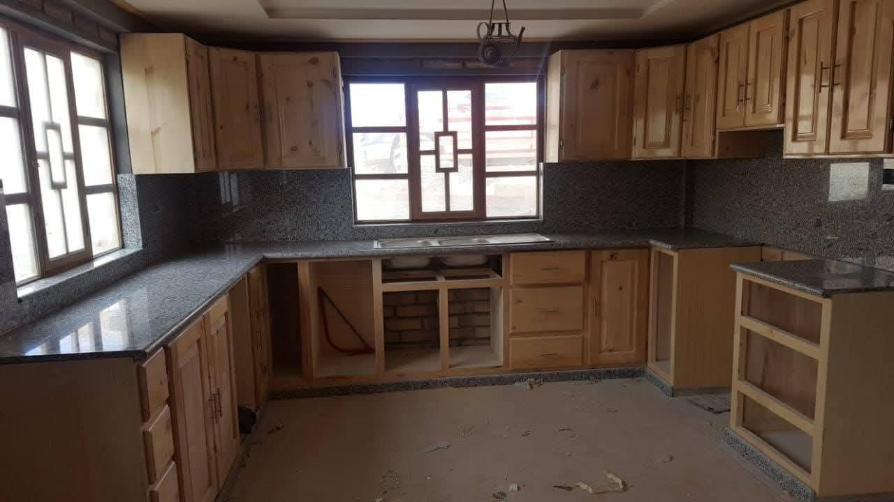
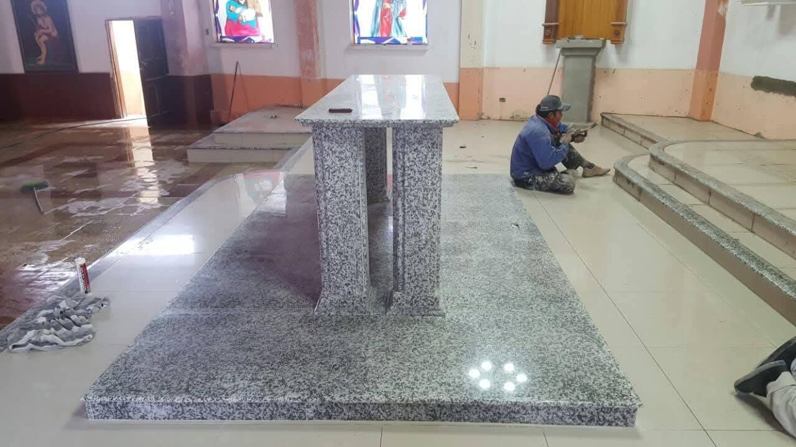
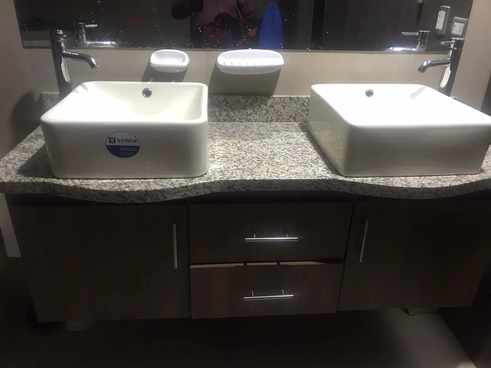
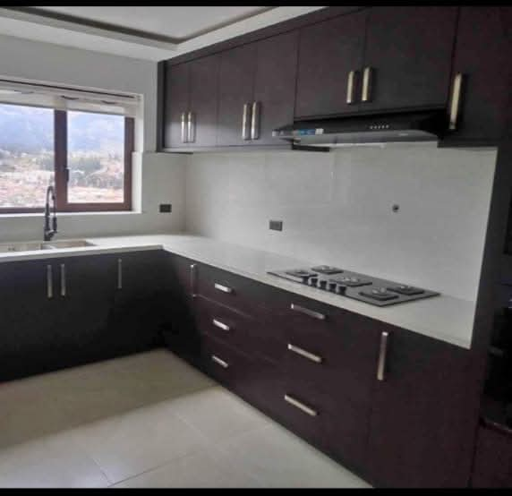
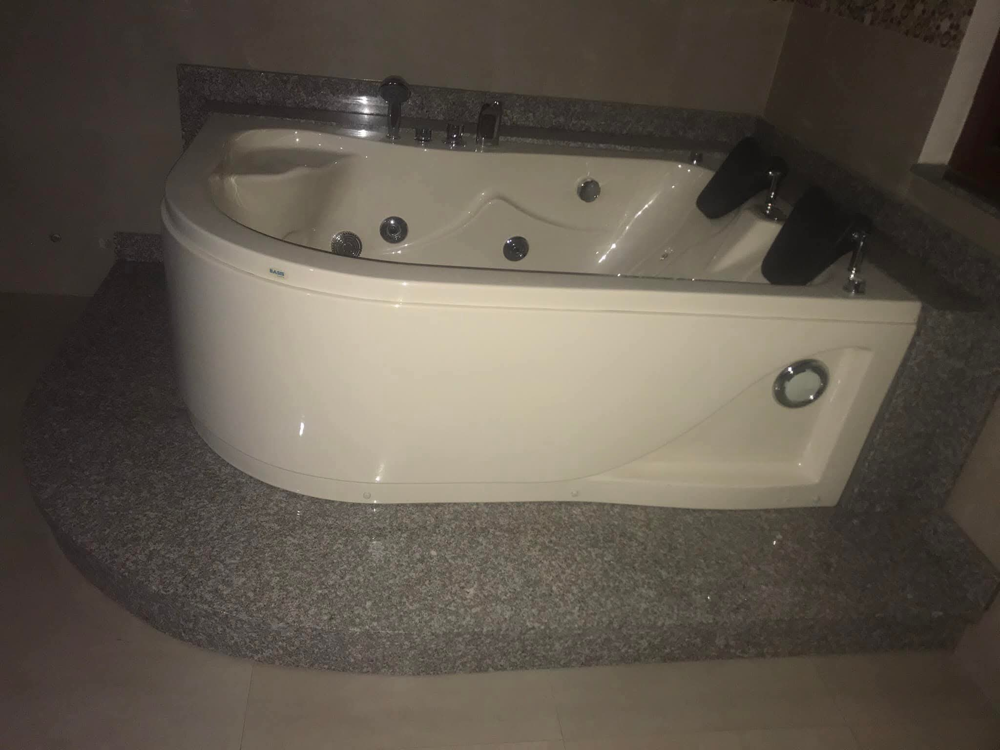
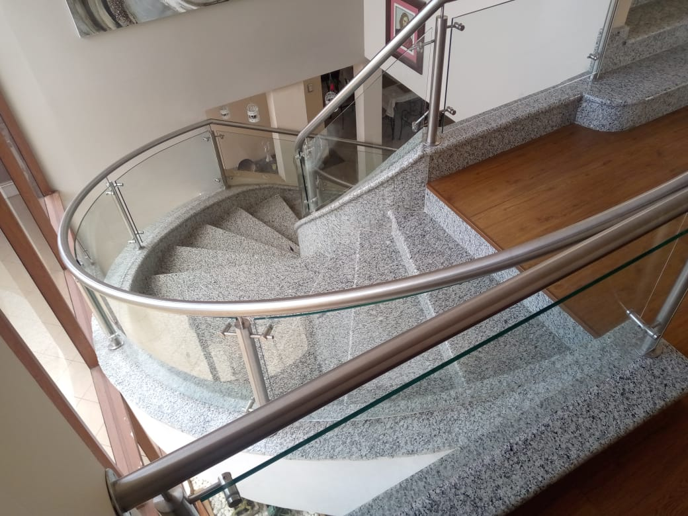
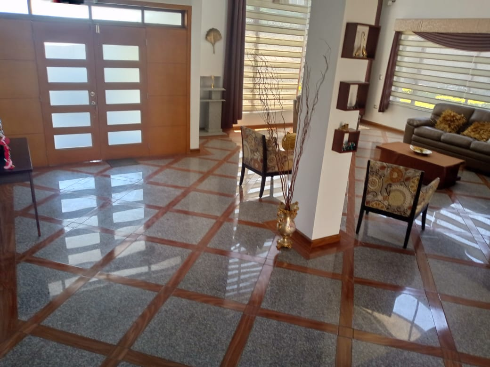

Mesones de cocina
Superficies resistentes, elegantes y diseñadas para uso diario.
Fabricación e instalación profesional
Mesones, baños, gradas, pisos y piezas a medida en mármol, cuarzo y granito, con acabados elegantes para espacios residenciales y comerciales.
Precisión, resistencia y estilo
Trabajamos piezas funcionales y decorativas cuidando proporción, medida y acabado. Cada proyecto se desarrolla para integrarse con el diseño del espacio y ofrecer una superficie durable, limpia y de alto valor visual en mármol, cuarzo o granito.
Servicios
Superficies resistentes, elegantes y diseñadas para uso diario.
Acabados sobrios para baños modernos, clásicos o personalizados.
Piezas de alto tránsito con cortes precisos y presencia arquitectónica.
Acabados en piedra para áreas interiores con alto impacto visual.
Opciones en mármol, cuarzo y granito según uso, color y presupuesto.
Diseños especiales según medidas, estilo del espacio y requerimientos.
Proyectos







Forma de trabajo
Revisión de dimensiones, ubicación y necesidades del proyecto.
Corte y preparación de piezas con atención al detalle del acabado.
Entrega ordenada para dejar la superficie lista para su uso.
Trabaja con nosotros
Buscamos personas responsables para apoyo en fabricación, instalación, acabados y trabajos de obra.
Contacto
Atendemos consultas para hogares, locales y proyectos de construcción en la zona Azogues - Cuenca con trabajos en mármol, cuarzo y granito.